一. 오차
내 일은 재는 것이다.
문화유산 실측이라고 부른다. 발굴은 다른 사람이 하고 해석은 또 다른 사람이 한다. 나는 좌표와 방위각과 치수만 낸다. 유적이 무엇을 뜻하는지는 내 소관이 아니다. 그런 걸 보고서에 쓰면 반려된다. 재지 않은 것을 썼기 때문이다.
현장에 가면 순서가 있다. 삼각대를 펴고, 다리 길이를 맞추고, 수준기를 본다. 기포가 가운데 들어와야 한다. 들어오기 전에는 아무것도 시작하지 않는다. 기포를 가운데 넣는 데 걸리는 시간이 그날 일의 절반이다.
이 일을 십사 년 했다. 오차와 함께 십사 년을 산 셈이다.
오차에는 성격이 있다. 흩어진다. 같은 것을 열 번 재면 값이 열 개 나오고, 그 열 개는 어떤 중심을 둘러싸고 흩어진다. 중심을 찾는 게 내 일이다.
작년에 한 유적에서 그게 안 됐다.
방위각이 어긋났다. 흔한 일이다. 오래된 구조물은 지반이 움직이고 축이 틀어진다. 그런데 이건 흩어지지 않았다. 열 번을 재면 열 번 다 같은 쪽으로 같은 만큼 어긋났다.
0.4도였다.
흩어지지 않는 오차는 오차가 아니다. 값이다.
나는 기기를 의심했다. 다른 기기를 가져다 댔다. 같았다. 기준점을 의심했다. 국가 기준점을 다시 받아 계산했다. 같았다. 마지막으로 나를 의심했다. 다른 사람에게 재게 했다. 같았다.
그러면 유적이 그렇게 서 있는 것이다. 처음부터 그 각도로 세워진 것이다.
문제는 그 각도가 아무것도 가리키지 않는다는 점이었다.
장면 이미지 · 오차

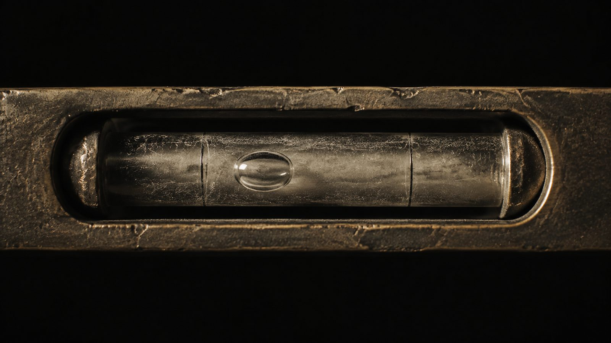
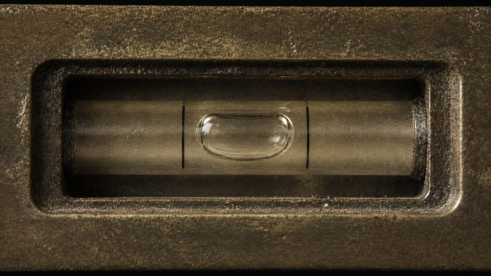
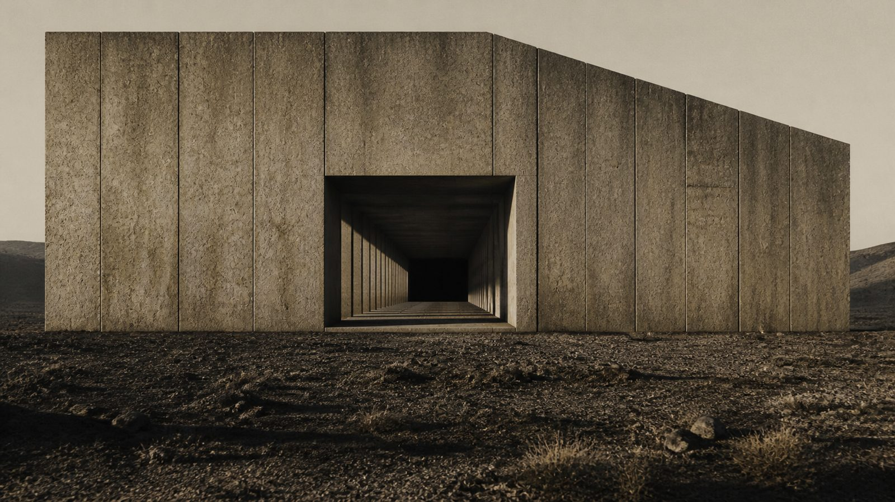
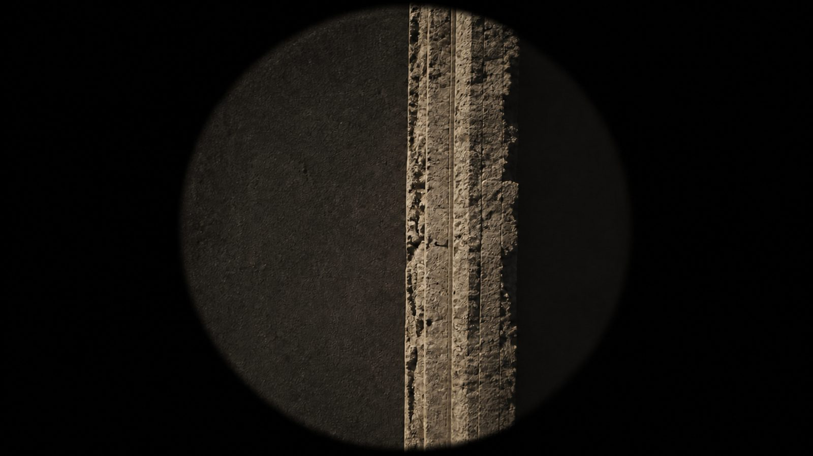
二. 다른 하늘
이런 경우에 하는 계산이 있다.
지구 축은 천천히 돈다. 이만육천 년쯤 걸려 한 바퀴다. 그래서 오래된 구조물이 지금 하늘과 어긋나 있으면, 시간을 되감아 그때 하늘을 넣어보는 방법을 쓴다. 별을 보고 세운 것이라면 그때 하늘에서 맞아떨어진다.
이건 내 일이 아니다. 고고천문 하는 사람들이 하는 일이다. 나는 그냥 궁금해서 해봤다.
맞았다.
되감으니 값이 붙었다. 오차 범위 안으로 깨끗하게 들어왔다. 그 시점의 하늘을 기준으로 하면 이 구조물은 정확하게 서 있었다.
그런데 그 각도가 향한 자리에 아무것도 없었다.
별이 없었다는 뜻이 아니다. 자리가 하늘에 없었다. 그 방위와 그 고도를 계산해서 찍으면 지평선 아래로 내려간다. 땅속을 가리키고 있었다.
나는 며칠 그걸 붙들고 있었다. 계산을 세 번 다시 했다. 같았다.
하늘의 무엇도 가리키지 않는다면 무엇을 가리키는가. 이 질문은 내 일의 바깥에 있었다. 나는 그 질문을 하면 안 되는 사람이다. 그런데 이미 해버렸다.
장면 이미지 · 다른 하늘

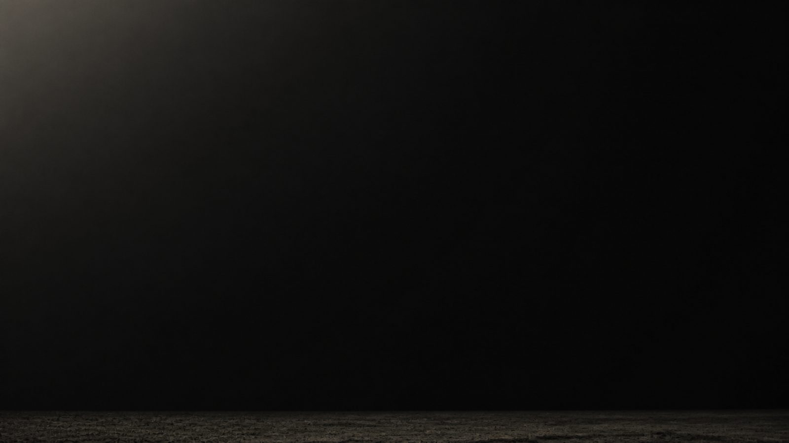
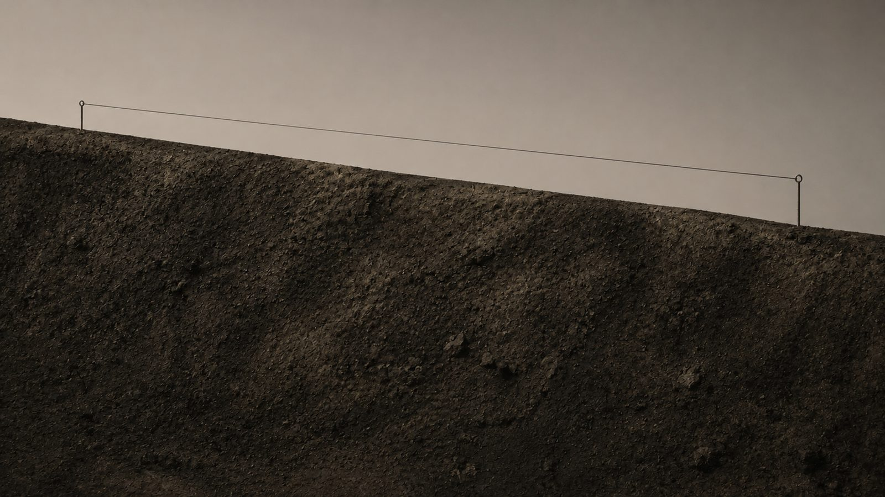
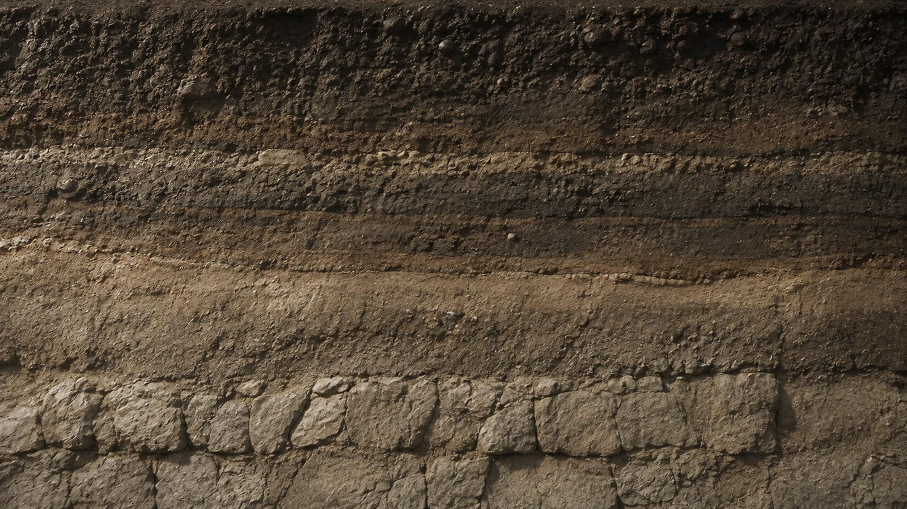
三. 삼각
우리 업계에는 자료가 쌓여 있다. 나라마다 실측 데이터를 공개한다. 유적의 좌표와 방위각과 치수. 해석이 아니라 숫자만 있는 자료다. 아무도 잘 안 본다. 볼 이유가 없어서다.
나는 그걸 받았다. 대륙을 가리지 않고 받았다. 형태도 시기도 재료도 다른 것들을 한 표에 넣었다. 오직 방위각만 남기고 나머지는 지웠다.
정렬이 일치하는 것들이 있었다. 지구 반대편에 있고 만든 시기가 수천 년 차이 나는데 값이 같았다.
그 값들을 지도 위에 선으로 그렸다.
선들이 서로에게 갔다.
이게 무슨 말인지 설명하려면 조금 돌아가야 한다. 유적의 방위각은 대개 하늘의 무엇을 향한다. 해가 뜨는 자리, 별이 뜨는 자리. 그래서 그 값들은 지역이 다르면 다른 곳을 가리킨다.
이것들은 아니었다. 각각의 값을 지표에 눕히면 다른 유적의 위치가 나왔다. 그것도 서로가 서로를.
두 점이 확정됐다.
그리고 두 점이 확정되면 세 번째 점의 좌표가 계산으로 나온다. 나는 그걸 계산했다. 오래 걸리지 않았다. 우리 일에서 제일 기본적인 계산이다.
숫자가 나왔을 때 나는 그것을 아무에게도 말하지 않기로 했다.
말할 언어가 없었다. 내가 가진 언어는 좌표와 각도뿐이고, 그 언어로는 이걸 말할 수 없다. 말하려면 다른 언어를 빌려야 하는데, 그 언어를 쓰는 순간 나는 재는 사람이 아니게 된다.
장면 이미지 · 삼각

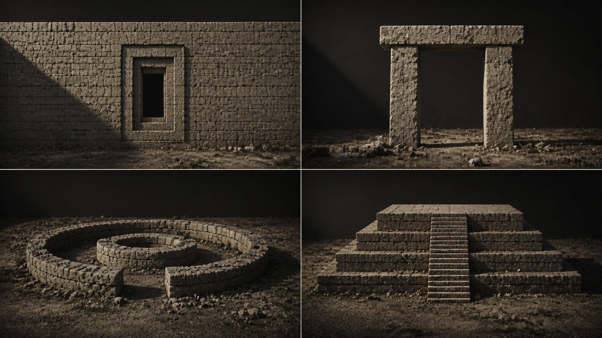
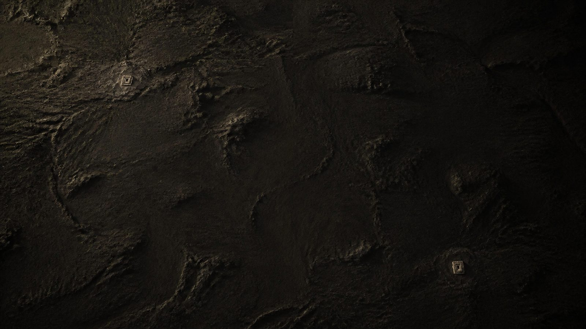
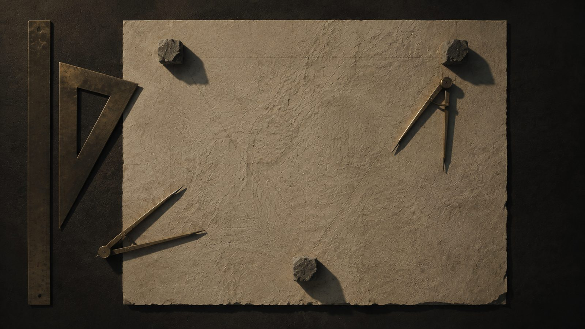
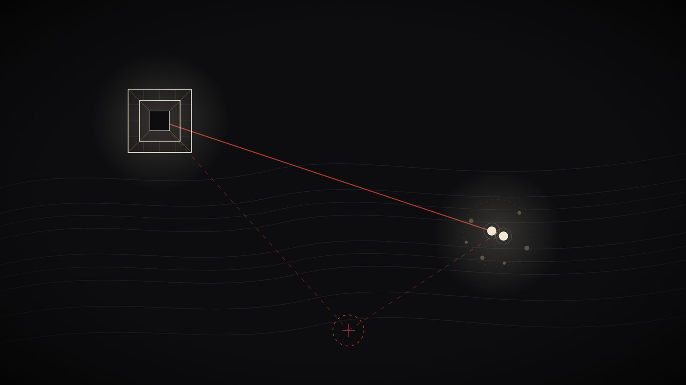
四. 두 손
정렬을 공유하는 유적들은 두 계열로 갈렸다.
첫 번째 계열에는 규격이 있었다.
대륙이 달라도 기준 단위가 같았다. 벽체 두께, 층의 높이, 모서리 각. 값이 반복됐다. 그리고 그 오차가 작았다. 사람이 손으로 세운 것에서는 나오지 않는 크기였다. 이건 내가 십사 년 동안 사람이 만든 것을 재온 사람으로서 하는 말이다.
구조가 언제나 세 겹이었다.
바깥 껍질은 방위를 잡는 부분이다. 여기서 각도가 나온다. 가운데 층은 하중을 받는다. 그리고 안쪽에 빈 공간이 있다.
빈 공간이 이상했다.
사람이 들어갈 크기가 아니었다. 훨씬 컸다. 그리고 들어가는 길이 없거나, 있어도 나중에 다른 손으로 뚫은 흔적이었다. 처음부터 들어가라고 만든 공간이 아니었다. 비워두려고 만든 공간이었다.
무언가가 그 안에 나타날 자리로 지어졌다고 보면 대부분이 설명된다. 다른 설명은 잘 되지 않는다.
벽면에 그을림이 있는 곳이 있었다.
불을 땐 자국이 아니다. 그을음이 쌓인 게 아니라 표면 자체가 한 번에 변성됐다. 아주 강한 열이 순간적으로 지나간 자국이다. 후대 사람들이 들어가 불을 피운 흔적은 그 위에 따로 남아 있어서 구별된다.
나는 그을린 방과 깨끗한 방을 셌다.
내가 자료를 확보한 열아홉 곳 중에 그을린 곳이 셋이었다.
열여섯은 깨끗했다. 지어놓고 한 번도 쓰지 못한 것이다.
그리고 규모가 제각각인 이유를 나는 이렇게 읽었다.
처음 한 자리를 잡을 때는 아무 표지도 없이 해야 한다. 표지를 세우려면 이미 그곳에 가 있어야 하는데, 첫 번째에는 갈 표지가 없다. 그 첫 번째가 어떻게 됐는지는 알 수 없지만, 한 번에 됐을 것 같지는 않다.
가장 거대한 유적이 가장 많이 잃은 자리일 것이다. 크기는 성취가 아니라 손실의 크기일 것이다. 이렇게 읽으면 규모의 분포가 설명된다. 달리는 설명되지 않는다.
두 번째 계열에는 건물이 없었다.
돌 몇 개가 원을 이루거나, 표시가 하나 있거나, 그것뿐이었다. 만든 것은 조잡했다. 재료도 제각각이고 가공도 거칠었다.
그런데 놓인 자리는 정확했다.
무엇을 지었는지는 아무래도 좋았고 어디에 두었는지만 중요했던 자들의 흔적이다.
그 자리들은 언제나 첫 번째 계열 유적에서 일정한 거리에 있었다. 편차가 작았다. 가깝지도 멀지도 않았다. 옆에 있으면서 닿지는 않으려 한 것처럼 보였다.
그리고 전부 사람이 살 수 없는 곳에 있었다. 물이 없고 바람이 세고 겨울이 길었다. 그런 곳에 굳이 표시를 놓고 갔다.
그들에게 그 조건이 문제가 되지 않았거나, 그 조건이 필요했을 것이다.
나는 이 두 계열을 두 손이라고 적었다. 종족이라는 말은 쓰지 않았다. 쓸 근거가 없었다.
장면 이미지 · 두 손

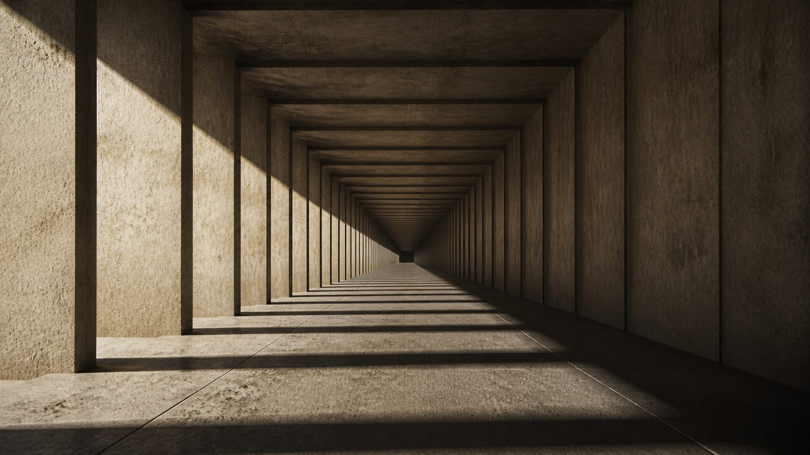
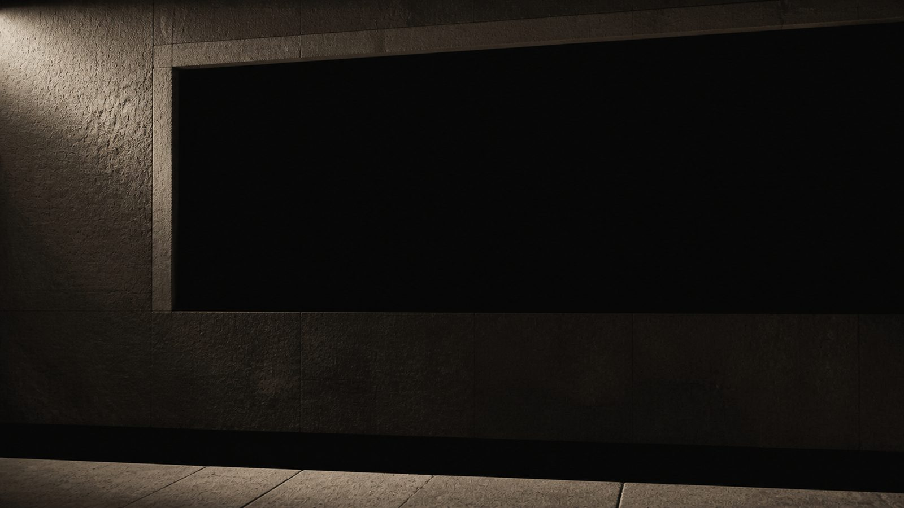
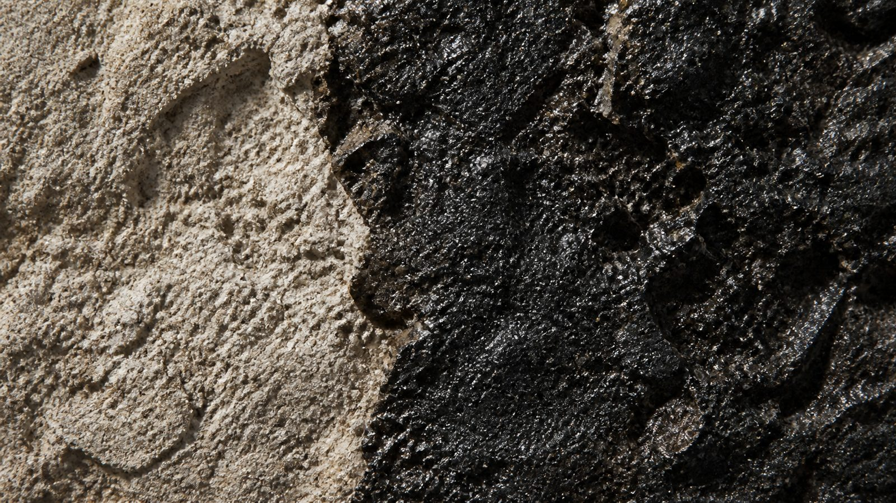
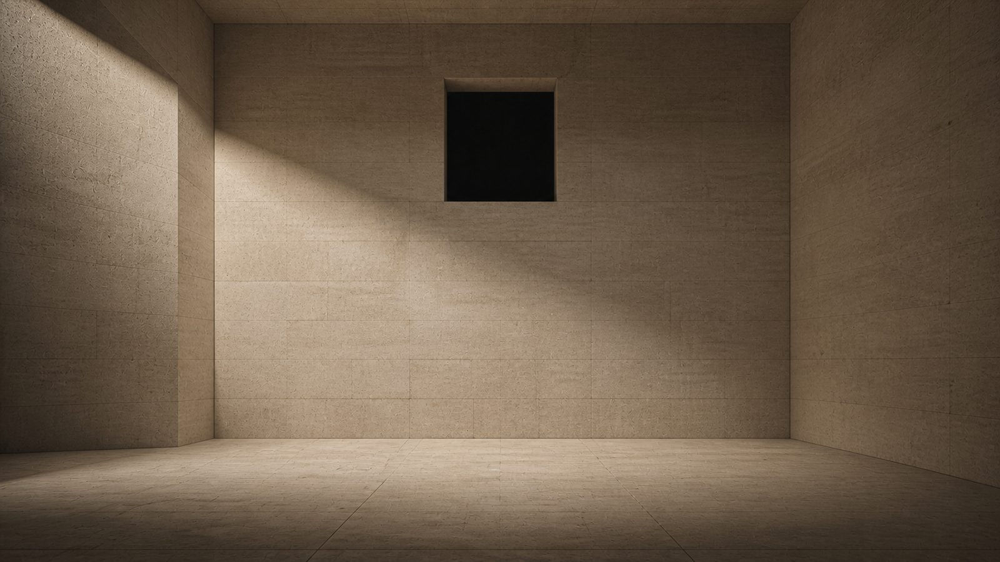
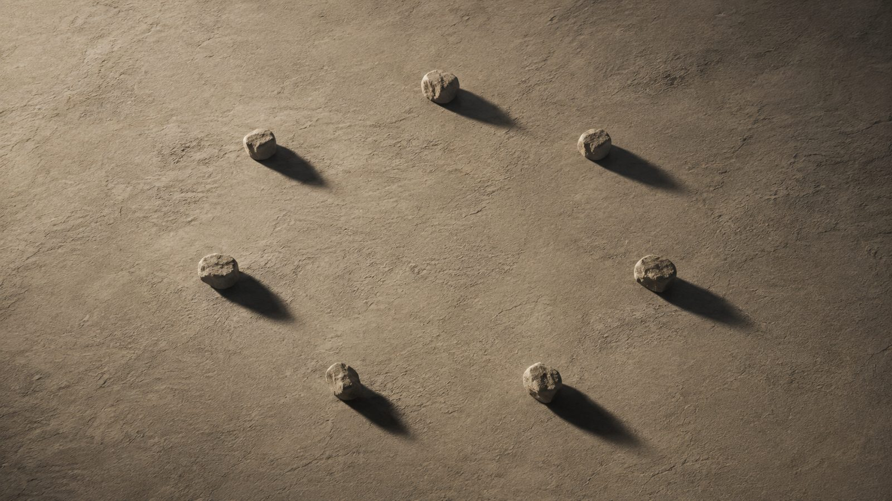
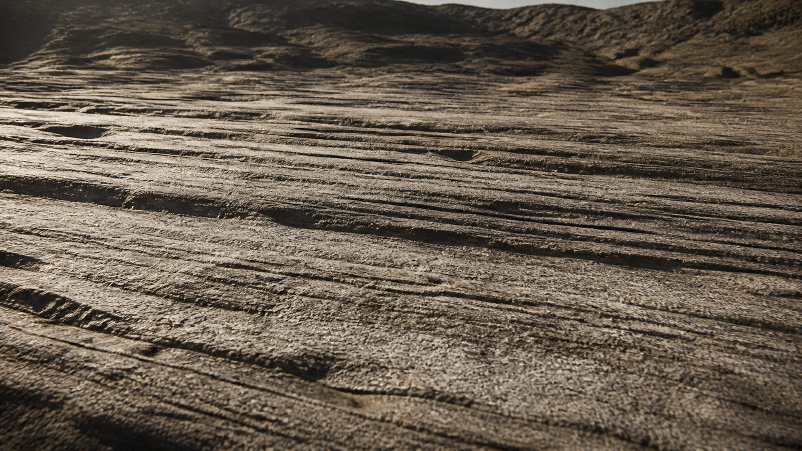
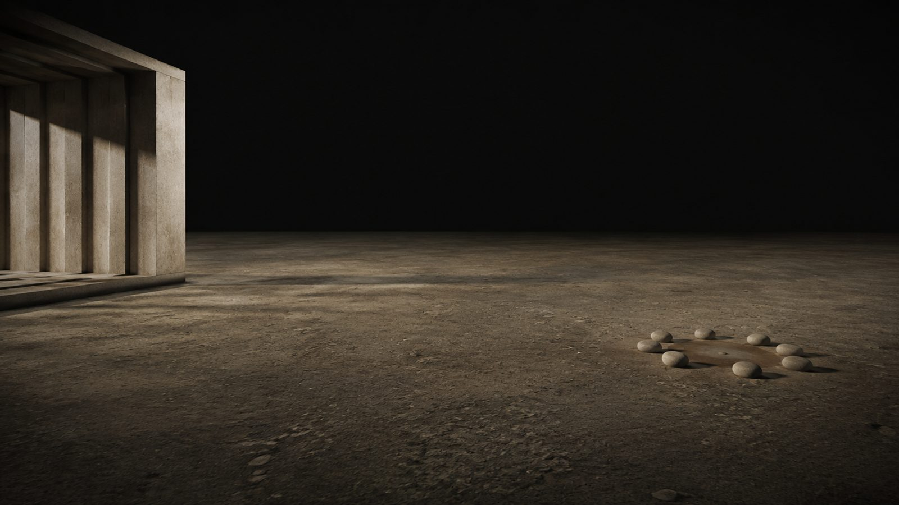
五. 몸
첫 번째 계열에서는 치수가 나온다.
계단 폭, 통로 높이, 벽에 파인 홈의 간격. 이런 것들에서 몸이 역산된다. 우리 일에서 자주 하는 작업이다.
인간보다 컸다.
그건 놀랍지 않았다. 놀라운 건 다른 쪽이었다.
개체차가 없었다.
여러 대륙, 여러 시기의 유적에서 나오는 치수가 같았다. 같은 정도가 아니라 거의 완전히 같았다. 사람이 만든 건축에서는 이런 일이 일어나지 않는다. 사람은 자기 몸에 맞춰 만들고, 사람의 몸은 제각각이다. 계단 높이는 언제나 그 시대 그 지역 사람들의 다리 길이만큼 흩어진다.
이건 흩어지지 않았다.
개체차가 없다는 건 태어나지 않았다는 뜻일 것이다. 태어나는 것은 흩어진다. 만들어지는 것만 같아진다.
왜 같아져야 했는지도 짚이는 데가 있다.
빈 방에 나타나려면 몸이 한 번 흩어졌다가 다시 모여야 했을 것이다. 그을림이 그 흔적이라면 그렇다. 그런데 흩어졌다 모이는 일에서 개체차는 실패 요인이 된다. 기준이 되는 형태가 하나여야 다시 모을 수 있다.
그렇다면 그들은 갈 수 있게 되기 위해 각자이기를 그만둔 것이다.
통로에 굽은 데가 하나도 없는 것도 그래서일 것이다. 열아홉 곳을 다 확인했는데 곡선이 없었다. 전부 직선이거나 정확한 각이었다. 사람이 만든 건물에는 반드시 어딘가 돌아가는 데가 있다. 짓다가 마음이 바뀌거나, 앞사람과 뒷사람의 생각이 달라서 생기는 자리다.
몸이 같으면 판단도 같다. 그들에게는 망설인 자리가 없었다.
두 번째 계열에서는 치수가 나오지 않는다. 계단도 통로도 없으니 역산할 것이 없다.
다만 하나가 나온다.
그 자리들에서 나온 광물이 있다. 특별할 것 없는 돌이다. 성분도 흔하다. 박물관 수장고에 분류 미상으로 들어가 있고 아무도 연구하지 않았다. 연구할 거리가 없어서다.
언제나 두 개다.
이게 처음에 눈에 들어왔다. 하나도 셋도 아니다. 항상 쌍이다. 여섯 곳의 출토 기록을 다 확인했다. 예외가 없었다.
표면에 마모가 있다. 손에 쥐어서 생긴 자국이다. 마모된 자리의 형태에서 손의 크기가 나온다.
인간과 거의 같았다.
크고 규격화된 쪽이 아니라 이쪽이었다. 우리와 비슷한 손을 가진 쪽.
마모의 깊이도 쟀다. 이런 경도의 광물이 사람 손에 그만큼 닳으려면 얼마나 오래 쥐고 있어야 하는지 계산이 나온다. 한 사람이 평생 쥐고 있어야 하는 깊이였다.
한 쌍에 한 생애가 들어 있는 셈이다.
그리고 마지막으로 하나를 더 봤다.
두 대륙에서 나온 두 점의 측정 기록을 비교했다. 다른 시기에 다른 사람이 잰 값이다. 잰 사람들은 서로를 몰랐다.
미세한 요동이 있었다. 측정할 때마다 값이 조금씩 흔들리는 것인데, 보통은 기기 잡음으로 처리한다.
그 요동이 같았다.
뜻은 없었다. 규칙도 없었다. 무작위였다. 다만 두 개의 무작위가 같았다.
나는 이것을 어디에도 쓸 수 없었다. 무작위가 일치한다는 문장은 아무것도 주장하지 않는 문장이다. 주장하지 않는 문장은 반박당하지도 않는다. 그냥 아무 데도 놓이지 않는다.
장면 이미지 · 몸

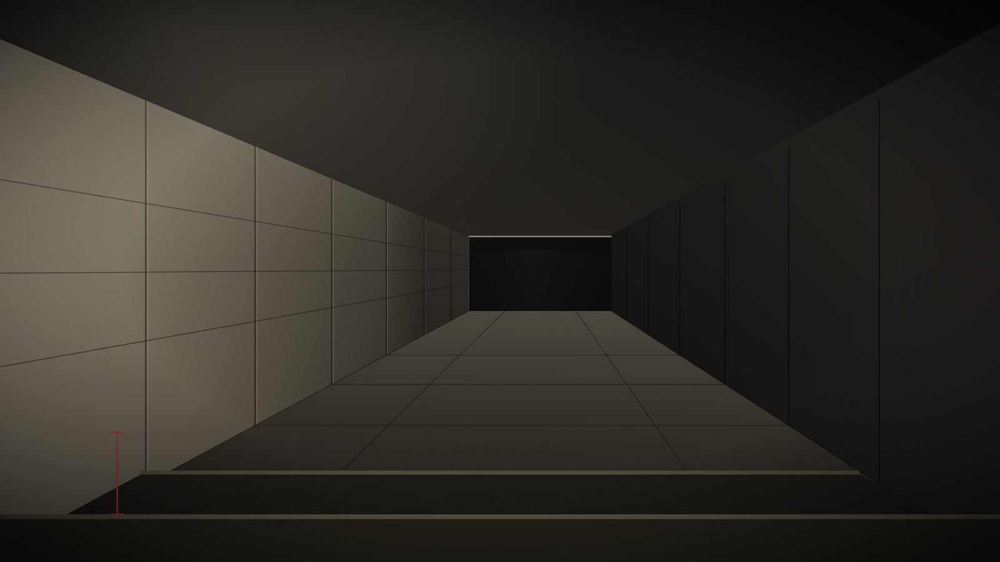
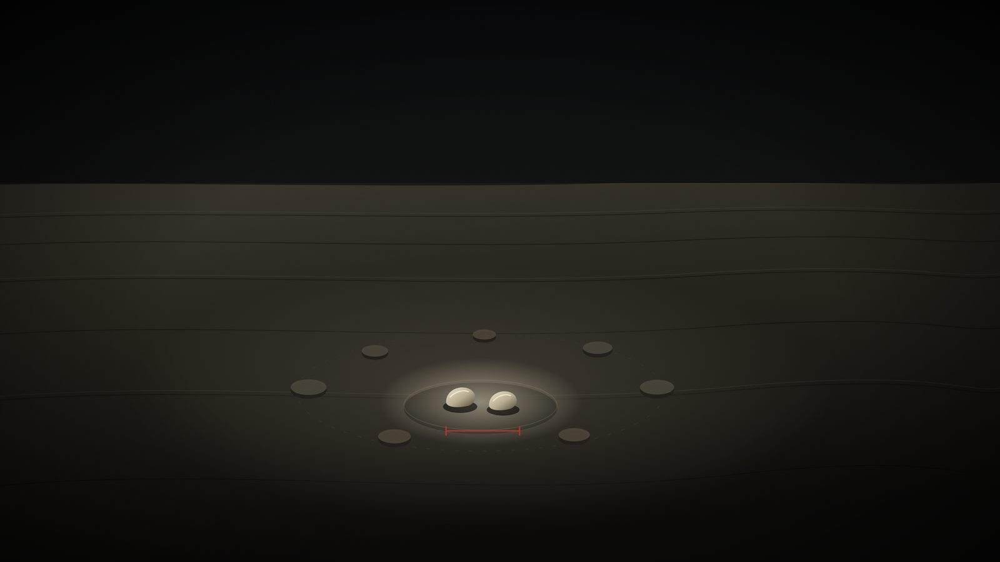
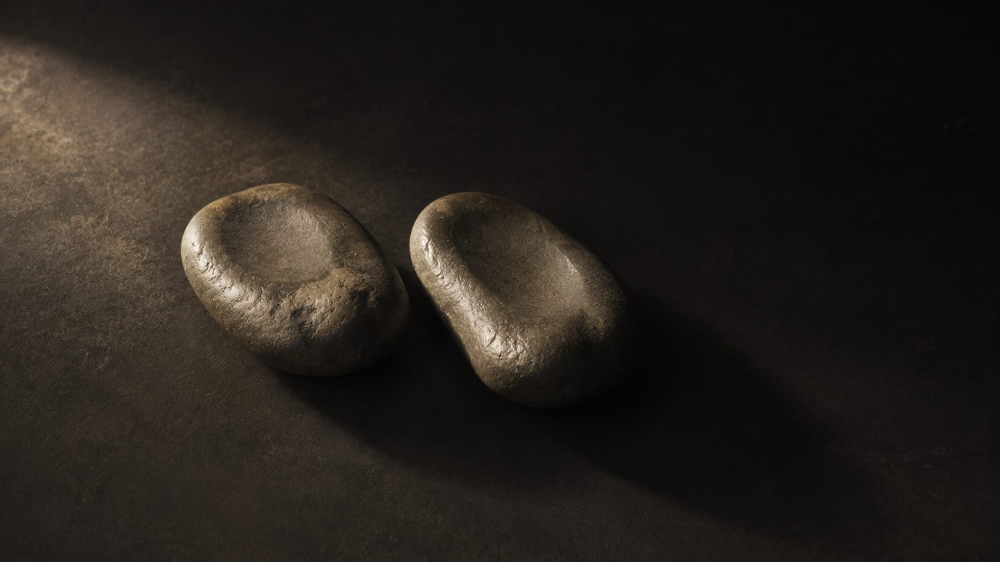
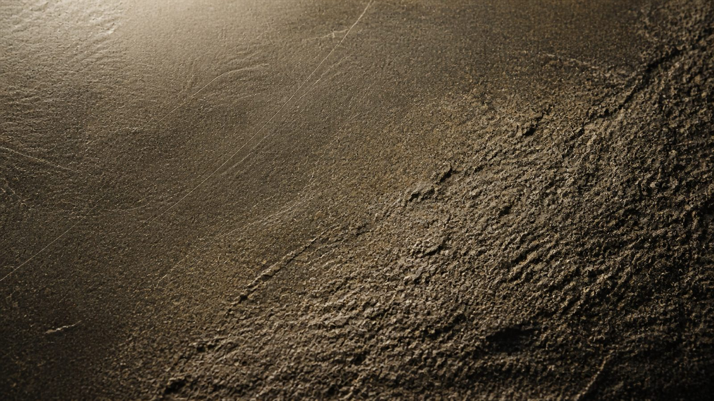
六. 두 결핍
해석을 찾다가 문헌으로 갔다. 내 분야가 아니라 오래 걸렸다.
세계 여러 곳의 오래된 이야기에 두 무리가 나온다. 이름은 전부 다르다. 그런데 역할 배치가 같다. 짓는 자들과 보는 자들이다.
싸움 이야기는 나중 층에 있었다. 오래된 층에서는 둘이 싸우지 않는다. 같이 일한다. 짓는 자가 자리를 묻고, 보는 자가 자리를 정한다. 그 순서가 반복된다.
여기까지 오니 두 계열의 관계가 짚였다.
짓는 쪽은 어디로 갈지 계산할 수 있었을 것이다. 다만 그곳이 지금 어떤지는 알 수 없었을 것이다. 아무리 정확히 계산해도 계산은 지나간 것으로 한다.
보는 쪽은 그곳이 지금 어떤지 안다고 했을 것이다. 다만 갈 수 없었을 것이다.
읽는 일에는 대가가 있었을 것이다. 다른 신호가 없어야 읽을 수 있었을 것이다. 그래서 물도 없고 바람만 부는 곳으로 갔을 것이다. 혼자 있어야 하고, 오래 있어야 하고, 그동안 아무것도 하지 못했을 것이다. 마모의 깊이가 그 시간이다.
그리고 그 능력은 개체마다 달랐을 것이다. 같아지면 읽지 못했을 것이다. 그래서 그들은 규격화할 수 없었고, 수를 늘릴 수도 없었을 것이다.
한쪽은 각자이기를 그만두고 갈 수 있게 됐고, 다른 쪽은 각자로 남아서 갈 수 없게 됐다.
서로가 서로의 결핍이었다.
그런데 이 협업에는 확인할 방법이 없다.
보는 쪽의 말이 맞았는지는 짓는 쪽이 무사히 나왔을 때만 알 수 있다. 나오지 못하면 이유를 알 수 없다. 계산이 틀렸는지, 읽기가 틀렸는지, 애초에 읽을 것이 없었는지. 실패는 언제나 같은 모양으로 온다. 아무도 나오지 않는 것.
깨끗한 방이 열여섯이었다.
실패가 쌓였고 책임을 물을 방법이 없었다. 그다음에 무슨 일이 있었는지는 여기 남아 있지 않다.
다만 층서가 남아 있다. 어느 시점부터 한쪽의 작업이 멈추고, 그 자리를 다른 쪽이 덮어 지은 자국이 여러 곳에서 나온다.
여기서는 아무도 싸우지 않았다. 다만 어느 날부터 오지 않았다.
장면 이미지 · 두 결핍

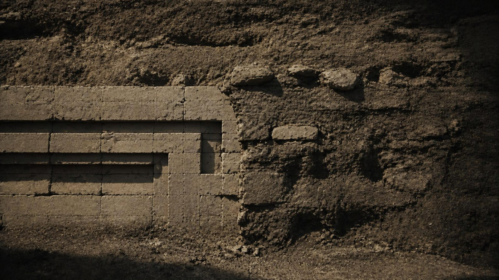
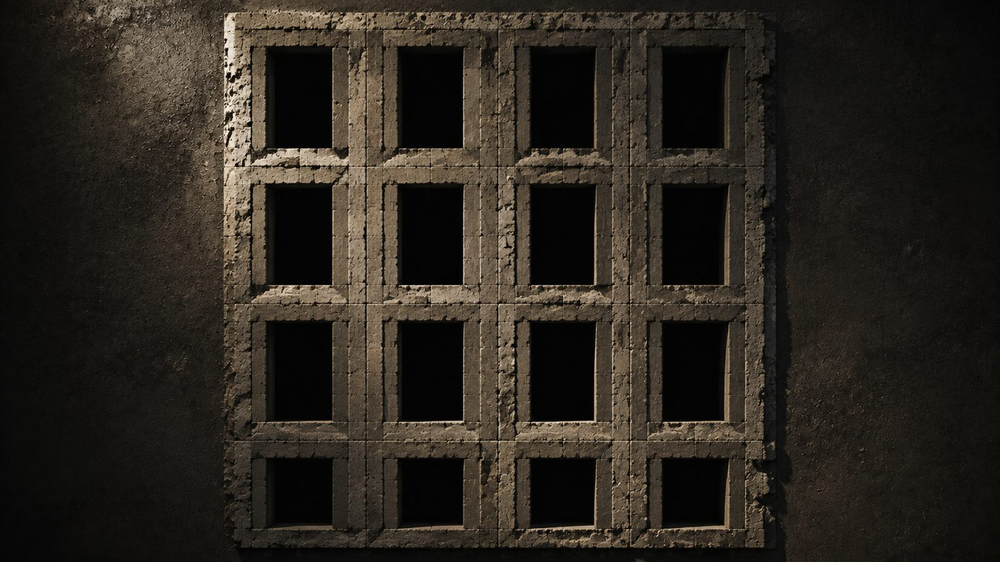
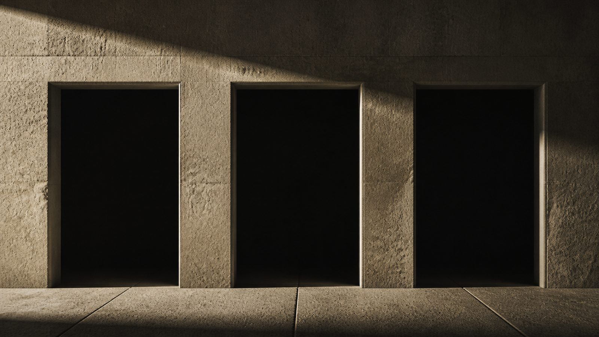
七. 세 번째 점
계산된 좌표로 갔다.
허가를 받을 명분이 없어서 개인 일정으로 갔다. 도착하는 데 이틀 걸렸다.
아무것도 없었다.
지형에 이상이 없었다. 물리탐사를 할 장비는 없었지만 있었어도 나올 게 없어 보였다. 흙을 걷어낸 흔적도, 돌을 옮긴 흔적도 없었다. 사람이 손댄 적이 없는 자리였다.
세워지지 않았다.
돌아와서 두 계열의 자료를 다시 훑었다. 그러고 보니 전부 그랬다. 어느 곳도 끝나 있지 않았다. 마감이 안 된 면이 있고, 다듬다 만 모서리가 있고, 쌓다가 멈춘 층이 있다. 나는 그걸 후대의 훼손으로 분류해왔다. 훼손이 아니었다. 처음부터 끝내지 않은 것이다.
마지막 표지를 세우러 오기로 한 쪽이 오지 않았을 것이다. 어느 쪽이 오기로 했었는지는 알 수 없다.
그 자리에 무엇이 놓였어야 했는지는 짚인다. 빈 방 하나와 광물 한 쌍이다. 두 손이 마지막으로 같이 일하기로 한 자리였을 것이다.
나는 그 자리에서 삼각대를 폈다.
잴 것이 없는데 폈다. 다리 길이를 맞추고 수준기를 봤다. 기포가 가운데로 들어오는 데 평소보다 오래 걸렸다. 바닥이 고르지 않아서였다.
기포가 들어왔다. 그리고 나는 아무것도 재지 않았다.
보고서를 썼다. 방위각과 좌표와 치수만 적었다. 열아홉 곳의 실측값과 여섯 곳의 출토 광물 계측값. 그을린 방과 깨끗한 방의 개수. 그게 전부다.
해석은 쓰지 않았다. 쓸 수 없어서가 아니었다. 쓰면 아무도 읽지 않기 때문이다. 이런 자료에 그런 문장이 한 줄이라도 붙으면, 그 뒤로는 숫자까지 같이 버려진다.
부록에 세 번째 점의 좌표를 넣었다. 설명은 달지 않았다. 어떻게 나온 값인지도 쓰지 않았다.
숫자만 보면 아무 의미도 없다. 그냥 아무것도 없는 땅의 좌표다.
계산해본 사람만 알 것이다.
나는 좌표만 적었다.
장면 이미지 · 세 번째 점

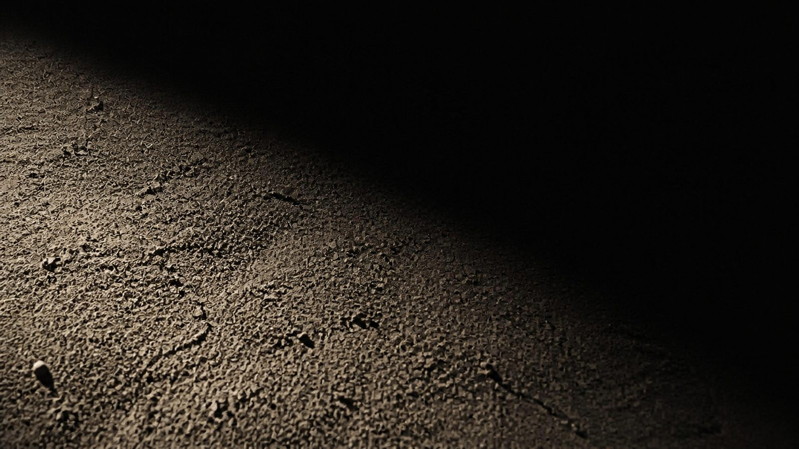
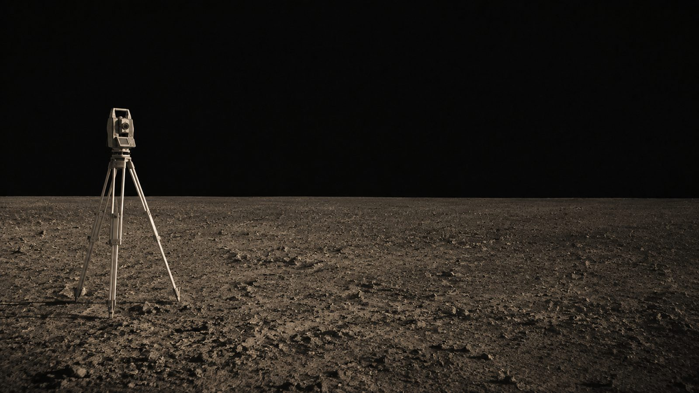
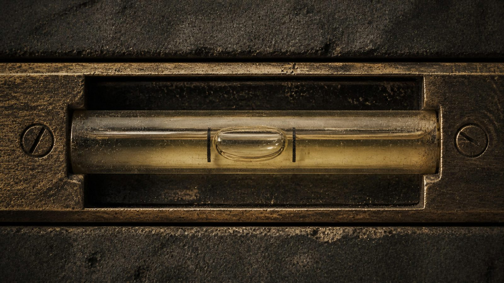
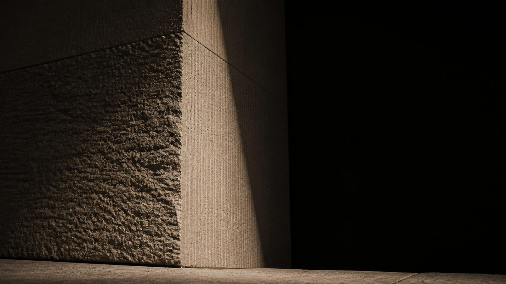
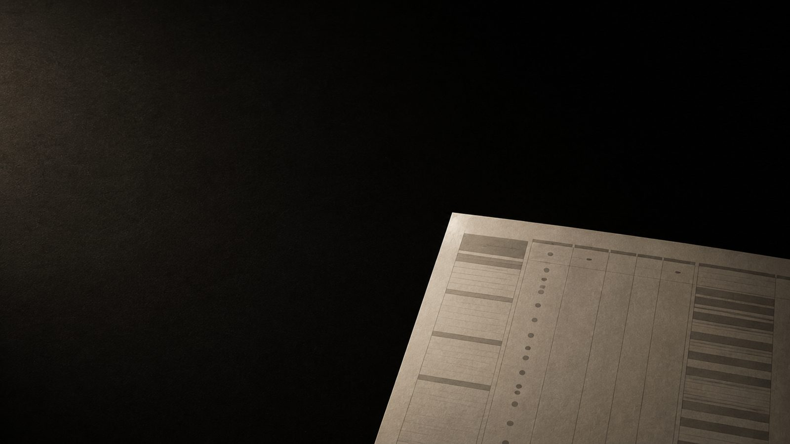
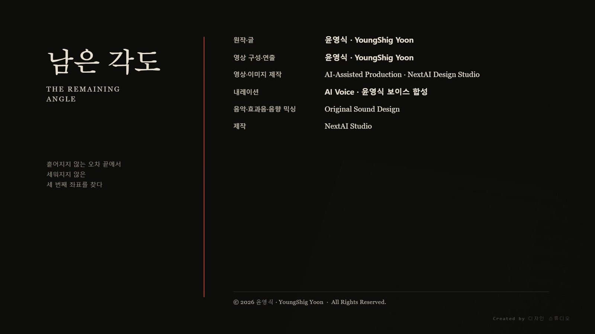